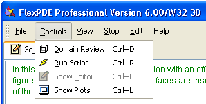

|
The Controls Menu |

  
|
|
The Controls Menu |
|
The Controls menu presents several optional functions for processing descriptors.

FlexPDE has two different operating modes, Edit and Plot. When in edit mode, the text of the current discriptor is displayed for editing. When in Plot mode, graphics are displayed, either the monitors and plots being constructed as a problem runs, or the final state of plots when a run is completed.
Domain Review
This is a modified form of the "Run" item. When FlexPDE is in Edit mode, the Domain Review menu item will begin processing the displayed problem descriptor, halting at various stages of the mesh generation to display the current state of the mesh construction. This is an aid to constructing problem domains. (See topic "Domain Review" below.)
Run
When FlexPDE is in Edit mode, the Run menu item will begin processing of the displayed problem descriptor. Execution will proceed without interruption through the mesh generation, execution and graphic display phases. (See topic "While the Problem Runs" below.)
Show Editor
When a problem is in Plot mode with graphics being displayed, the Show Editor menu item will enter Edit mode and display the current problem text. (See topic "Editing Scripts" below.) If the problem is stopped or has not yet been run, the tab will show the  icon. If the problem is running while the editor is displayed, the
icon. If the problem is running while the editor is displayed, the  icon will display on the problem tab.
icon will display on the problem tab.
Show Plots
When a problem is in the Edit mode, the Show Plots menu item will switch to Plot mode and display the current state of the problem graphics. (See topic "While the Problem Runs" below.)
Page url: index.html?thecontrolsmenu.html